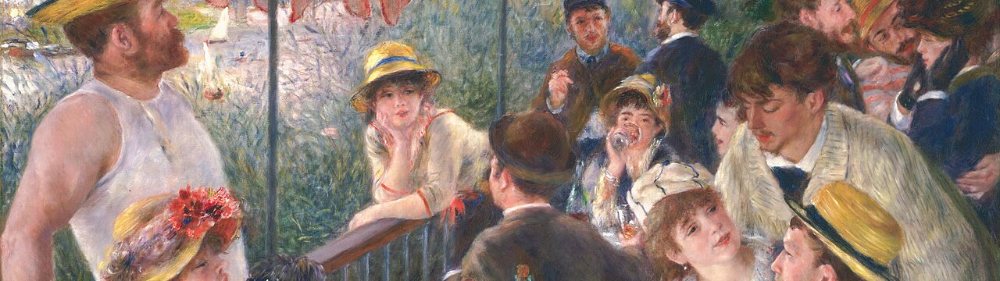

Optima Academy OnlineAn Education Experience Company
Optima Academy OnlineAn Education Experience CompanyVoici ma famille
Read each paragraph, then press ▶ Écouter and follow along with your eyes. Read it a second time with the audio playing — that pairing of eye and ear is where fluency starts.
- voici — here is / this is
- un peu — a little
- aussi — also
- souvent — often
- tous ensemble — all together
- j’adore — I love / adore
Voici ma famille. Mon grand frère est l’aîné : il est sérieux et très travailleur.
Ma petite sœur, la benjamine, est drôle mais un peu paresseuse. Elle est aussi très curieuse.
Mes parents sont gentils et généreux. Le week-end, nous faisons souvent une grande promenade tous ensemble. J’adore ma famille !
Annotate the passage right here. Tap an adjective to circle it, then tap the noun it describes to draw the link. Then say whether it is masculine or feminine — notice that the brother’s adjectives stay masculine (sérieux, travailleur), while the sister’s take the feminine ending: paresseux → paresseuse, curieux → curieuse. Last, find the three BANGS adjectives placed before their nouns.
When French family and friends greet each other, they often exchange la bise — a light kiss on each cheek. It's not romantic; it's the everyday warmth of hello and goodbye. The number of kisses varies by region: two is most common, but you'll find three or even four in parts of the south and the north. Ask a French person “combien de bises ?” and you'll get a friendly local answer.
La bise is woven into family life — especially at le repas dominical, the Sunday family lunch. Relatives arrive, exchange la bise around the table, and settle in for a long, unhurried meal. It's the moment the whole family — l'aîné, le benjamin, les parents — comes together, exactly like the grande promenade in today's reading.
Renoir painted his friends at a long lunch by the river Seine in 1880–81: glasses, grapes, a little dog and hours of conversation. It is the same kind of long, unhurried meal as le repas dominical you just read about. When these friends arrived, they greeted each other with la bise.

Look closely: find two guests who are leaning in close to talk. (click for a hint)
La bise is courtesy made visible — a small, daily act that says you matter to me. Greeting every person in the room individually, rather than waving at the group, is a point of good manners in France, and children learn it early.
Courtesy isn't grand gestures — it's the ordinary attention we pay one another. A family that greets each member by name and by cheek is a family practicing courtesy every single day. « La politesse est le parfum de l’âme. » (Politeness is the perfume of the soul.)
Write five sentences about your real family
Introduce at least three people and say what each is like. Use five different adjectives, at least one irregular (beau / nouveau / vieux), one correctly placed BANGS adjective, and the verb faire once. This is your rehearsal for both the Speaking Task and Langue en action — write it well and reuse it. Tip: you can also click any word in the word bank on the right (below, on a phone), or a green “thing to do” in sentence 5, to insert it into your sentence.
You read a full family portrait and understood it — every word was one you learned in Week 1. That's real reading, not decoding — and your own portrait is ready for the graded work. À demain ! (See you tomorrow!)